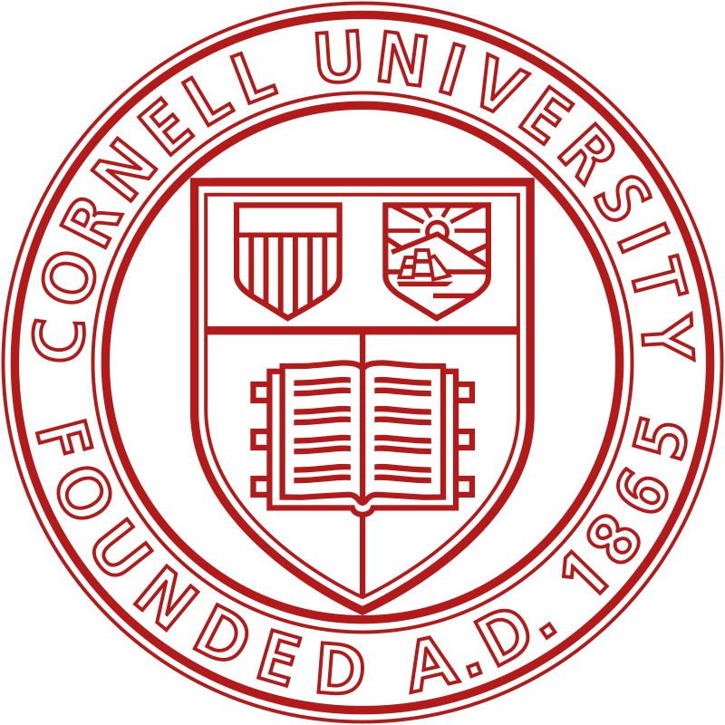
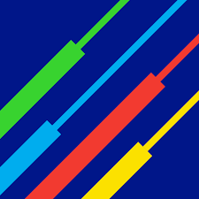
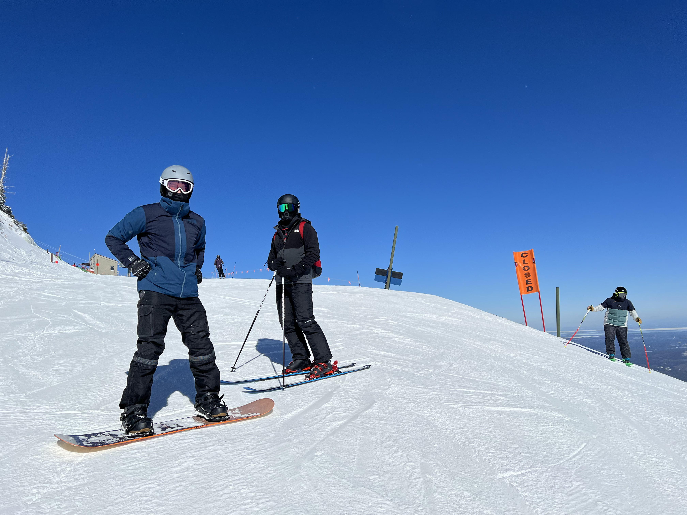

I am a graduating senior at Cornell studying Computer Science, and later this year I will be joining Google as a software engineer. Click the links below my name to connect.
Experience
Professional

Teaching Assistant @
Cornell Univeristy
Aug 2021 - Dec 2021
- Conducted weekly office hour meetings to answer questions and assist in data-driven web application assignments
- Graded and provided constructive feedback on weekly programming assignments

Price Volatility Management Intern @
National Grid
Jul 2020 - Aug 2020
- Created an automated price map tool with R and SQL to provide a visual representation of futures contract price trends across the country
- Programmed scripts to convert tick data into minute data and dynamically generate price by volume charts to assist traders in analyzing pricing data
- Researched impacts of COVID-19 on the company with other interns and presented findings to management
Tutor @
Varsity Tutors
Mar 2020 - Jun 2020
- Improved 9 students' understanding of subjects including mathematics, computer science, and technology
- Identified weak areas and customized approaches to boost student performance on assignments and exams
Special Project Intern @
The Adecco Group
Aug 2021 - Dec 2021
- Reconciled large client to identify over 30,000 line items, using advanced Microsoft Excel techniques along with client specific billing system, which resulted in the identification of $1 million in outstanding revenue
- Collaborated with team members to brainstorm and implement best processes for addressing portfolio resolutions
- Adjusted both payable and receivable accounts to justify invoice disputes with other parties
Education
Student @
Cornell Univeristy
Graduating May 2022
- Bachelor of Science in Computer Science
- Minor in Applied Economics
- Dean's List all semesters
- Relevant Coursework: Data-Driven Web Applications, Machine Learning, Algorithms, Data Structures and Functional Programming, Object Oriented Programming, Databases, Futures Options and Financial Derivatives
Skills
Projects
Party Playlist Mixer
- Final project in CS 4300 Language and Information
- Collaborated within the Agile Development cycle to build full stack application that produces a personalized party playlist based on everyone's individual playlists
- Implemented information retrieval and text analysis techniques in Python using Spotify's REST API and backed by MongoDB running on the Google Cloud Platform
NBA Game Predictor
- Product of project course CS 4701 Practicum in Artificial Intelligence
- Collaborated to build an application to predict the outcome of NBA games based team statistics
- Created K-nearest neighbor, support vector machine, and neural networks prediction models in Python based off 3000+ past NBA games
Extras
Here are some of my interests

Snowboarding
I first learned how to snowboard through a class at Cornell.
I enjoyed it so much that I decided to get my own snowboard, and now
this is my third season. This is a picture of me at Whiteface
Mountain in Lake Placid, NY.
Travel
I enjoy traveling and have been to most states on the east coast.
This is a picture of the sunrise in the Outer Banks, NC.